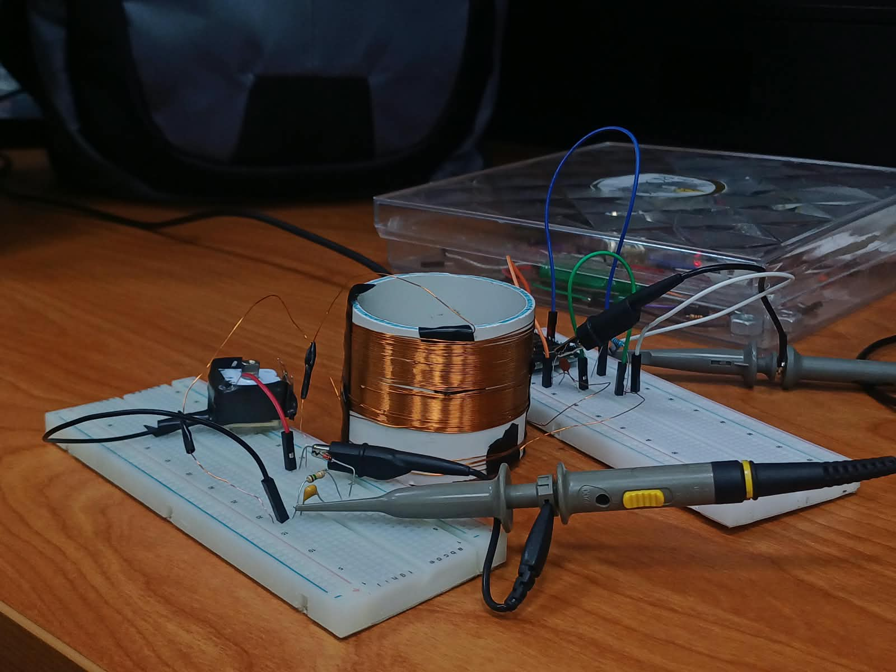

·
Tuner & envelope detector
SHEET 1 OF 3 · REV M1 · SIGNED OFF
STEP 01 / 06
DRAG · SCROLL · CLICK A TAG

CALLOUT
WHAT THE READING SAYS
f₀
kHz
Q
f₀ / BW
BAND
kHz
STEP NOTES
MEASUREMENT SCHEDULE
Predicted = Table 4 as submitted · Measured = Tables 5–6 · Error = 100 × (P − M) / M
| REF | PARAMETER | PREDICTED | MEASURED | ERROR |
|---|
NOTE 1 · TUNING RANGE
C = 150 pF → kHz
The tank saw a capacitance ratio of (1119 / 965.5)² ≈ 1.34, not 280 / 20 = 14. Likely causes: partial shaft travel, the wrong section, or a large parallel capacitance. Measure C at both stops.
NOTE 3 · DETECTOR TRANSFER
NOTE 2 · SELECTIVITY
Q = 1065 / 237.7 ≈ 4.48. With 9 kHz channel spacing the passband spans about 26 channels. The 15 kΩ load and the probe damp the tank; M2's six-turn link should sharpen it.
NOTE 4 · TIME CONSTANT (LOG)
RC is about 50× one 1 MHz carrier cycle, so ripple stays small, and about 4× shorter than one 5 kHz audio cycle, so the output still follows the voice.
ISSUE LOG
| # | ISSUE | CAUSE | RESOLUTION |
|---|
Amplify the tuned RF with two common-emitter stages, then recover the envelope with a new 1N4148 detector. M1's tank stays; its old detector comes off.
ASSEMBLY SEQUENCE
0 / DONE
MEASUREMENTS TO RECORD
STATUS
Not started. This sheet is drawn once M2 is signed off and the next lab brief is released.
THIS SHEET WILL HOLD